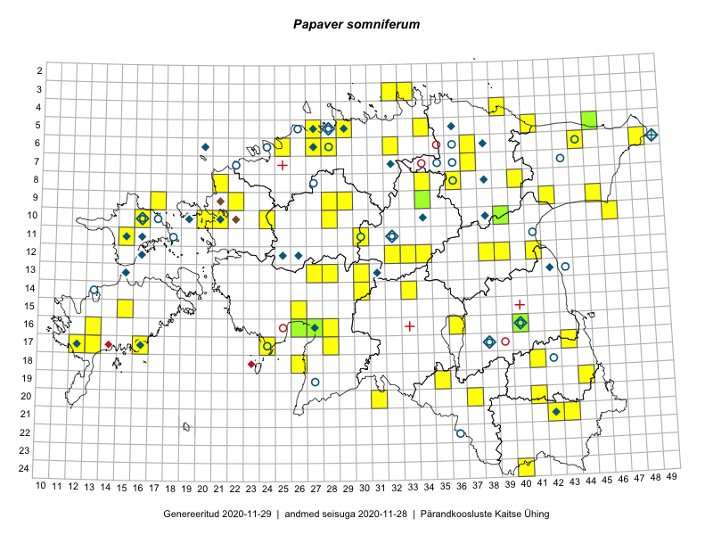

Papaver somniferum
Uuendatud: 2016-12-02
Kaardile koondatud taksonid: Papaver somniferum L.

Kaart põhineb 60 kirjel, neist vaatlusi 59 ja eksemplare 1. Taksonit on leitud 48 ruudust.
Kuvatud viited 20 esimesele andmebaasikirjele, ülejäänud PlutoFis
- Thea Kull: 2015-07-07: 16-40: ala
- Toomas Kukk, Eerik Leibak: 2015-08-12: 09-17: ala
- Toomas Kukk, Eerik Leibak: 2015-08-12: 09-17: GPS punkt
- Peedu Saar, Liina Oja: 2015-07-21: 06-44: ala
- Peedu Saar, Liina Oja: 2015-07-24: 09-45: ala
- Peedu Saar, Eerik Leibak: 2015-08-16: 12-39: ala
- Jana-Maria Habicht, Ester Valdvee: 2015-07-31: 08-34: ala
- Jana-Maria Habicht, Ester Valdvee, Kirke Pilvik: 2015-07-25: 09-34: ala
- Meeli Mesipuu, Timo Luhamäe: 2015-07-24: 05-41: ala
- Mari Reitalu: 2015-08-25: 17-12: ala
- Erkki Otsman, Sergei Smirnov: 2015-07-12: 05-29: ala
- Mari Reitalu, Oliver Parrest: 2015-08-12: 17-13: ala
- Karin Kikas, Elle Rajandu: 2015-07-23: 15-15: GPS punkt
- Tõnu Ploompuu: 2015-08-26: 09-42: ala
- Tõnu Ploompuu, Anna-Grete Rebane, Hanna-Eliisa Luts: 2015-07-20: 10-20: ala
- Hanna-Eliisa Luts, Tõnu Ploompuu, Anna-Grete Rebane: 2015-07-19: 10-24: ala
- Tõnu Ploompuu: 2015-08-11: 06-27: ala
- Tõnu Ploompuu: 2015-07-14: 09-22: ala
- Tõnu Ploompuu: 2015-08-21: 10-21: ala
- Sander Laherand, Ott Luuk: 2016-06-16: 21-42: ala